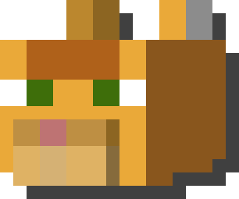
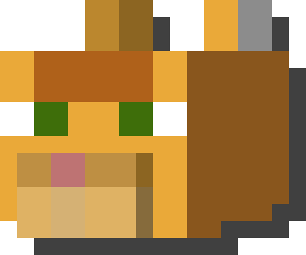

A Scratch project I started in early 2022 and was practically inspired from Karlson, a unity game made by famous game dev Dani(dont know why hes inactive now;-;). anyway the game was supposed to be a speed based platformer but unfortunately due to my low coding skill at that time it turned out to be glitchy buggy, and overall difficult to implement levels and such. I have recently started a new retake on the game and will probably be better. With much better animations for the player too
This is another ambitious project by yours truly. After the failure of Boted Up naive old lvl 1 programmer me decided to make a new game featuring my favourite mythical creature and a knight. This game was supposed to be INSANELY epic but since i was dum the game turned out to be scratch project run off. Hopefully i can improve on This concept or just LET IT GOO, LET IT GOOO another corny joke wow